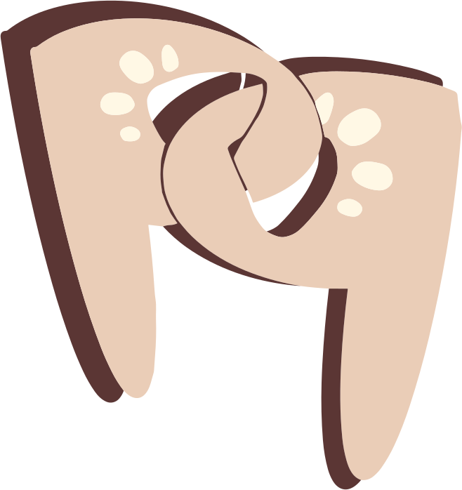

 PetPair
PetPair
Home
Radio Spot
Impressum
Impressum
Autoren/-innen
Jasmin Martens, Anny Weng, Saeareum Park
Übungsaufgabe im Kurs Grundlagen der Medieninformatik 1
Veranstalter
Prof. Dr.-Ing. Udo Frese
Unversität Bremen
Enrique-Schmidt-Str. 5
28359 Bremen
ufrese@uni-bremen.de
Übergeordnete Website
Impressum der Universität Bremen
Quellen
von JÉSHOOTS auf Pexels (zuletzt aufgerufen 08.12.23)
, CC0
von Michael G auf Unsplash! (zuletzt aufgerufen 08.12.23)
, Unsplash
Lizens
von Michael G auf Unsplash! (zuletzt aufgerufen 28.02.24)
, Unsplash
Lizens
von Michael G auf Unsplash! (zuletzt aufgerufen 08.12.23)
Unsplash
Lizens
von Kabo auf Unsplash! (zuletzt aufgerufen 08.12.23)
Unsplash
Lizens
von Kari Shea auf Unsplash!
Unsplash
Lizens
von Gary Bendig auf Unsplash.
Unsplash
Lizens
von Frenjamin Benklin auf Unsplash.
Unsplash
Lizens
von Keven Mueller auf Unsplash.
Unsplash
Lizens
von Amjith S auf Unsplash.
Unsplash
Lizens
von Gustavo Zambelli auf Unsplash.
Unsplash
Lizens
von Satyabratasm auf Unsplash.
Unsplash
Lizens
Illustration by Icons8 from Ouch! (zuletzt Aufgerufen 29.11.23)
, CC BY
Blobs erstellt mit Blobmaker.
Bild von Mann mit Hund (Radio Spot) ist mit KI erstellt.
Icons von
Dazzle UI
, CC BY
Logos der "Tierschutzvereine" sind selbst erstellt.
Smartphone
on Freepik, CC BY
Logo app Store
Logo Google Play
, auf SVG-Repo,
Logo Lizens
Radio Spot
Freya von Elevenlabs.io
, CC BY
Cat Purring von skymary auf Freesound.org
, CC0
Barking Dog 2 von ivolipa auf Freesound.org
, CC0
Happy Feelings 2 (short version) von AudioCoffee auf Freesound.org
, CC BY-NC 4.0